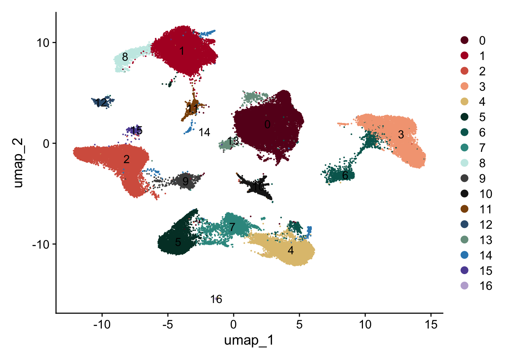
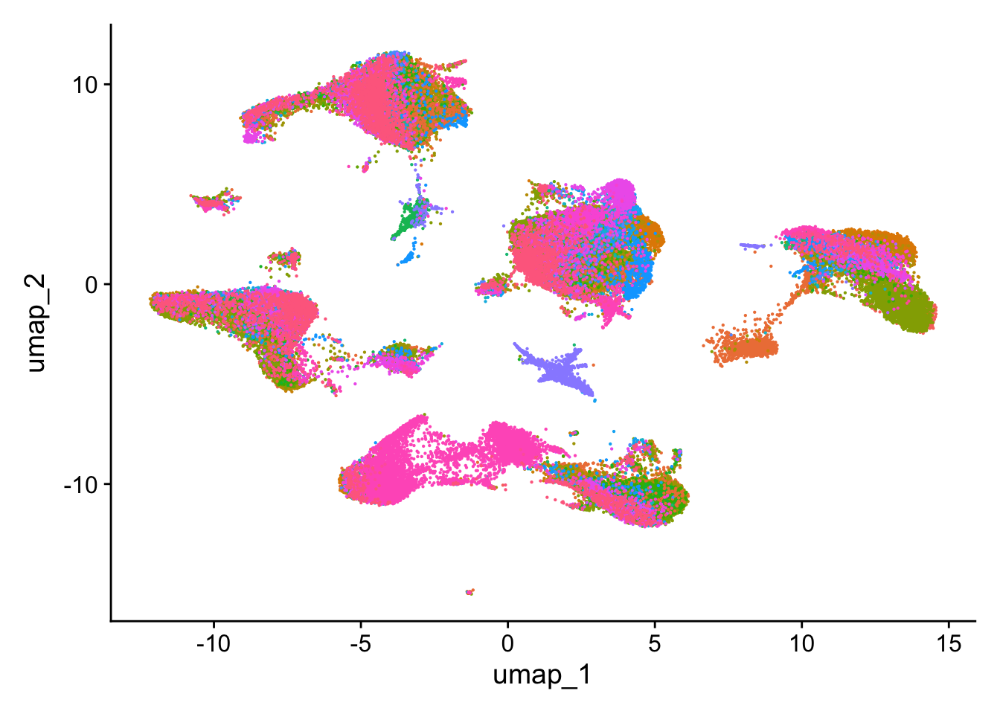

HumanMyocarditis
A.DeMartin
2024-07-18
Last updated: 2024-07-22
Checks: 5 2
Knit directory: HumanMyocarditis/
This reproducible R Markdown analysis was created with workflowr (version 1.7.1). The Checks tab describes the reproducibility checks that were applied when the results were created. The Past versions tab lists the development history.
The R Markdown file has unstaged changes. To know which version of
the R Markdown file created these results, you’ll want to first commit
it to the Git repo. If you’re still working on the analysis, you can
ignore this warning. When you’re finished, you can run
wflow_publish to commit the R Markdown file and build the
HTML.
Great job! The global environment was empty. Objects defined in the global environment can affect the analysis in your R Markdown file in unknown ways. For reproduciblity it’s best to always run the code in an empty environment.
The command set.seed(20240718) was run prior to running
the code in the R Markdown file. Setting a seed ensures that any results
that rely on randomness, e.g. subsampling or permutations, are
reproducible.
Great job! Recording the operating system, R version, and package versions is critical for reproducibility.
Nice! There were no cached chunks for this analysis, so you can be confident that you successfully produced the results during this run.
Using absolute paths to the files within your workflowr project makes it difficult for you and others to run your code on a different machine. Change the absolute path(s) below to the suggested relative path(s) to make your code more reproducible.
| absolute | relative |
|---|---|
| /Users/immbio/Desktop/Project/Angelina/HumanMyocarditis/data/healthyDonors/ | data/healthyDonors |
| /Users/immbio/Desktop/Project/Angelina/HumanMyocarditis/data/dataJune24/ | data/dataJune24 |
| /Users/immbio/Desktop/Project/Angelina/HumanMyocarditis/data/dataNCR/ | data/dataNCR |
| /Users/immbio/Desktop/Project/Angelina/HumanMyocarditis/data/ImmpathMyocarditis_allmerged_seurat.rds | data/ImmpathMyocarditis_allmerged_seurat.rds |
Great! You are using Git for version control. Tracking code development and connecting the code version to the results is critical for reproducibility.
The results in this page were generated with repository version adb9b48. See the Past versions tab to see a history of the changes made to the R Markdown and HTML files.
Note that you need to be careful to ensure that all relevant files for
the analysis have been committed to Git prior to generating the results
(you can use wflow_publish or
wflow_git_commit). workflowr only checks the R Markdown
file, but you know if there are other scripts or data files that it
depends on. Below is the status of the Git repository when the results
were generated:
Ignored files:
Ignored: .Rhistory
Ignored: .Rproj.user/
Ignored: analysis/.Rhistory
Ignored: data/dataJune24/
Ignored: data/dataNCR/
Ignored: data/healthyDonors/
Unstaged changes:
Modified: analysis/HumanMyocarditis.Rmd
Note that any generated files, e.g. HTML, png, CSS, etc., are not included in this status report because it is ok for generated content to have uncommitted changes.
These are the previous versions of the repository in which changes were
made to the R Markdown (analysis/HumanMyocarditis.Rmd) and
HTML (docs/HumanMyocarditis.html) files. If you’ve
configured a remote Git repository (see ?wflow_git_remote),
click on the hyperlinks in the table below to view the files as they
were in that past version.
| File | Version | Author | Date | Message |
|---|---|---|---|---|
| Rmd | adb9b48 | angeldemartin | 2024-07-18 | update website |
| html | adb9b48 | angeldemartin | 2024-07-18 | update website |
load packages
start pre-processing
load files and merge
### load files healthy donors and merge
basedir <- "/Users/immbio/Desktop/Project/Angelina/HumanMyocarditis/data/healthyDonors/"
fileNamList <- list.files(path = basedir)
for(i in 1:length(fileNamList)){
seuratS <- readRDS(paste0(basedir, fileNamList[i]))
if(exists("seuratM")){
seuratM <- merge(x = seuratM, y = seuratS)
}else{
seuratM <- seuratS
}
}
remove(seuratS)
table(seuratM$dataset)
table(seuratM$orig.ident)
### load files dataJune24 and merge
basedir <- "/Users/immbio/Desktop/Project/Angelina/HumanMyocarditis/data/dataJune24/"
fileNamList <- list.files(path = basedir)
for(i in 1:length(fileNamList)){
seuratS <- readRDS(paste0(basedir, fileNamList[i]))
if(exists("seuratM")){
seuratM <- merge(x = seuratM, y = seuratS)
}else{
seuratM <- seuratS
}
}
remove(seuratS)
table(seuratM$dataset)
table(seuratM$orig.ident)
### load files dataNCR and merge
basedir <- "/Users/immbio/Desktop/Project/Angelina/HumanMyocarditis/data/dataNCR/"
fileNamList <- list.files(path = basedir)
for(i in 1:length(fileNamList)){
seuratS <- readRDS(paste0(basedir, fileNamList[i]))
if(exists("seuratM")){
seuratM <- merge(x = seuratM, y = seuratS)
}else{
seuratM <- seuratS
}
}
remove(seuratS)
table(seuratM$dataset)
table(seuratM$orig.ident)add metadata
### add any type of metadata
### patient
HH_1 <- c("o28576_1_08-8_20220525_Hu_nucseq_Graz_8_HH_GEM")
HH_2 <- c("o28576_1_09-9_20220525_Hu_nucseq_Graz_9_HH_GEM")
HH_3 <- c("o28576_1_10-10_20220525_Hu_nucseq_Graz_10_HH_GEM")
HH_4 <- c("o28576_1_11-11_20220525_Hu_nucseq_Graz_11_HH_GEM")
HH_5 <- c("o28576_1_12-12_20220525_Hu_nucseq_Graz_12_HH_GEM")
HH_6 <- c("o292731_1-1_20220818_Hu_nucseq_Graz_9_HH_GEM")
HH_7 <- c("o292731_2-2_20220818_Hu_nucseq_Graz_13_HH_GEM")
HH_8 <- c("o294781_01-1_20220912_Hu_nucseq_Graz_21_HH_GEM")
HH_9 <- c("o294781_02-2_20220912_Hu_nucseq_Graz_22_HH_GEM")
HH_10 <- c("o294781_03-3_20220912_Hu_nucseq_Graz_23_HH_GEM")
HH_11 <- c("o294781_04-4_20220912_Hu_nucseq_Graz_24_HH_GEM")
pat_39 <- c("347741_6-6_20240326_Hu_nucseq_Immpath_AM39_0", "348751_1-6_20240326_Hu_nucseq_Immpath_AM39_0_rep")
pat_18 <- c("353921_28-28_20240529_Hu_nucseq_Immpath_EMB18")
pat_24 <- c("353921_29-29_20240529_Hu_nucseq_Immpath_EMB24")
pat_25 <- c("353921_30-30_20240529_Hu_nucseq_Immpath_EMB25")
pat_27 <- c("353921_31-31_20240529_Hu_nucseq_Immpath_EMB27")
pat_29 <- c("353921_32-32_20240529_Hu_nucseq_Immpath_EMB29")
pat_30 <- c("353921_33-33_20240529_Hu_nucseq_Immpath_EMB30")
pat_35 <- c("353921_34-34_20240529_Hu_nucseq_Immpath_EMB35")
pat_37 <- c("353921_35-35_20240529_Hu_nucseq_Immpath_EMB37")
pat_NCR30 <- c("o27533_1_11-11_20220203_Hu_nucseq_EMB30_GEM")
pat_NCR31 <- c("o27533_1_12-12_20220203_Hu_nucseq_EMB31_GEM")
pat_NCR32 <- c("o27936_1_7-7_20220309_Hu_nucseq_EMB32_GEM")
pat_NCR33 <- c("o292731_3-3_20220818_Hu_nucseq_SG_33_EMB_GEM")
pat_NCR34 <- c("o292731_4-4_20220818_Hu_nucseq_SG_34_EMB_GEM")
pat_NCRGraz1 <- c("o28576_1_01-1_20220525_Hu_nucseq_Graz_1_EMB_GEM")
pat_NCRGraz2 <- c("o28576_1_02-2_20220525_Hu_nucseq_Graz_2_EMB_GEM")
pat_NCRGraz15 <- c("o294781_06-6_20220912_Hu_nucseq_Graz_15_EMB_GEM")
seuratM$patient <- "pat_nr"
seuratM$patient[which(seuratM$dataset %in% pat_39)] <- "Immpath39"
seuratM$patient[which(seuratM$dataset %in% pat_18)] <- "Immpath18"
seuratM$patient[which(seuratM$dataset %in% pat_24)] <- "Immpath24"
seuratM$patient[which(seuratM$dataset %in% pat_25)] <- "Immpath25"
seuratM$patient[which(seuratM$dataset %in% pat_27)] <- "Immpath27"
seuratM$patient[which(seuratM$dataset %in% pat_29)] <- "Immpath29"
seuratM$patient[which(seuratM$dataset %in% pat_30)] <- "Immpath30"
seuratM$patient[which(seuratM$dataset %in% pat_35)] <- "Immpath35"
seuratM$patient[which(seuratM$dataset %in% pat_37)] <- "Immpath37"
seuratM$patient[which(seuratM$dataset %in% pat_NCR30)] <- "NCR30"
seuratM$patient[which(seuratM$dataset %in% pat_NCR31)] <- "NCR31"
seuratM$patient[which(seuratM$dataset %in% pat_NCR32)] <- "NCR32"
seuratM$patient[which(seuratM$dataset %in% pat_NCR33)] <- "NCR33"
seuratM$patient[which(seuratM$dataset %in% pat_NCR34)] <- "NCR34"
seuratM$patient[which(seuratM$dataset %in% pat_NCRGraz1)] <- "NCRGraz1"
seuratM$patient[which(seuratM$dataset %in% pat_NCRGraz2)] <- "NCRGraz2"
seuratM$patient[which(seuratM$dataset %in% pat_NCRGraz15)] <- "NCRGraz15"
seuratM$patient[which(seuratM$dataset %in% HH_1)] <- "HH1"
seuratM$patient[which(seuratM$dataset %in% HH_2)] <- "HH2"
seuratM$patient[which(seuratM$dataset %in% HH_3)] <- "HH3"
seuratM$patient[which(seuratM$dataset %in% HH_4)] <- "HH4"
seuratM$patient[which(seuratM$dataset %in% HH_5)] <- "HH5"
seuratM$patient[which(seuratM$dataset %in% HH_6)] <- "HH6"
seuratM$patient[which(seuratM$dataset %in% HH_7)] <- "HH7"
seuratM$patient[which(seuratM$dataset %in% HH_8)] <- "HH8"
seuratM$patient[which(seuratM$dataset %in% HH_9)] <- "HH9"
seuratM$patient[which(seuratM$dataset %in% HH_10)] <- "HH10"
seuratM$patient[which(seuratM$dataset %in% HH_11)] <- "HH2"
table(seuratM$patient)
table(seuratM$orig.ident)
#### cond
#healthy
healthy <- c("o28576_1_08-8_20220525_Hu_nucseq_Graz_8_HH_GEM","o28576_1_10-10_20220525_Hu_nucseq_Graz_10_HH_GEM","o28576_1_11-11_20220525_Hu_nucseq_Graz_11_HH_GEM", "o28576_1_12-12_20220525_Hu_nucseq_Graz_12_HH_GEM","o292731_1-1_20220818_Hu_nucseq_Graz_9_HH_GEM","o292731_2-2_20220818_Hu_nucseq_Graz_13_HH_GEM", "o294781_01-1_20220912_Hu_nucseq_Graz_21_HH_GEM", "o294781_02-2_20220912_Hu_nucseq_Graz_22_HH_GEM", "o294781_03-3_20220912_Hu_nucseq_Graz_23_HH_GEM", "o294781_04-4_20220912_Hu_nucseq_Graz_24_HH_GEM", "o28576_1_09-9_20220525_Hu_nucseq_Graz_9_HH_GEM")
seuratM$cond <- "myocarditis"
seuratM$cond[which(seuratM$dataset %in% healthy)] <- "healthy"
table(seuratM$cond)rerun seurat
#rerun seurat
seuratM <- NormalizeData (object = seuratM)
seuratM <- FindVariableFeatures(object = seuratM)
seuratM <- ScaleData(object = seuratM, verbose = TRUE)
seuratM <- RunPCA(object=seuratM, npcs = 30, verbose = FALSE)
seuratM <- RunTSNE(object=seuratM, reduction="pca", dims = 1:20, check_duplicates = FALSE)
seuratM <- RunUMAP(object=seuratM, reduction="pca", dims = 1:20)
seuratM <- FindNeighbors(object = seuratM, reduction = "pca", dims= 1:20)
res <- c(0.25, 0.6, 0.8, 0.4)
for (i in 1:length(res)) {
seuratM <- FindClusters(object = seuratM, resolution = res[i], random.seed = 1234)
}### save seurat object
saveRDS(seuratM, file="/Users/immbio/Desktop/Project/Angelina/HumanMyocarditis/data/ImmpathMyocarditis_allmerged_seurat.rds")end pre-processing
load file
##load merged file
fileNam <- "/Users/immbio/Desktop/Project/Angelina/HumanMyocarditis/data/ImmpathMyocarditis_allmerged_seurat.rds"
seuratM <- readRDS(fileNam)
table(seuratM$dataset)
347741_6-6_20240326_Hu_nucseq_Immpath_AM39_0 348751_1-6_20240326_Hu_nucseq_Immpath_AM39_0_rep
350 316
353921_28-28_20240529_Hu_nucseq_Immpath_EMB18 353921_29-29_20240529_Hu_nucseq_Immpath_EMB24
208 105
353921_30-30_20240529_Hu_nucseq_Immpath_EMB25 353921_31-31_20240529_Hu_nucseq_Immpath_EMB27
227 579
353921_32-32_20240529_Hu_nucseq_Immpath_EMB29 353921_33-33_20240529_Hu_nucseq_Immpath_EMB30
335 730
353921_34-34_20240529_Hu_nucseq_Immpath_EMB35 353921_35-35_20240529_Hu_nucseq_Immpath_EMB37
1217 604
o27533_1_11-11_20220203_Hu_nucseq_EMB30_GEM o27533_1_12-12_20220203_Hu_nucseq_EMB31_GEM
1242 236
o27936_1_7-7_20220309_Hu_nucseq_EMB32_GEM o28576_1_01-1_20220525_Hu_nucseq_Graz_1_EMB_GEM
1192 2740
o28576_1_02-2_20220525_Hu_nucseq_Graz_2_EMB_GEM o28576_1_08-8_20220525_Hu_nucseq_Graz_8_HH_GEM
1684 3921
o28576_1_09-9_20220525_Hu_nucseq_Graz_9_HH_GEM o28576_1_10-10_20220525_Hu_nucseq_Graz_10_HH_GEM
3707 3731
o28576_1_11-11_20220525_Hu_nucseq_Graz_11_HH_GEM o28576_1_12-12_20220525_Hu_nucseq_Graz_12_HH_GEM
3991 3818
o292731_1-1_20220818_Hu_nucseq_Graz_9_HH_GEM o292731_2-2_20220818_Hu_nucseq_Graz_13_HH_GEM
4908 9882
o292731_3-3_20220818_Hu_nucseq_SG_33_EMB_GEM o292731_4-4_20220818_Hu_nucseq_SG_34_EMB_GEM
6286 620
o294781_01-1_20220912_Hu_nucseq_Graz_21_HH_GEM o294781_02-2_20220912_Hu_nucseq_Graz_22_HH_GEM
1442 1998
o294781_03-3_20220912_Hu_nucseq_Graz_23_HH_GEM o294781_04-4_20220912_Hu_nucseq_Graz_24_HH_GEM
841 1480
o294781_06-6_20220912_Hu_nucseq_Graz_15_EMB_GEM
4439 table(seuratM$RNA_snn_res.0.25)
0 1 2 3 4 5 6 7 8 9 10 11 12 13 14 15
13622 11107 9410 7153 5421 3776 2718 2642 1549 1388 1086 759 754 725 332 300
16
87 table(seuratM$orig.ident)
62829 ##set color vectors
colcond <- c("#355C7D", "#B45B5C")
names(colcond) <- unique(seuratM$cond)
col0.25 <- c("#67001f", "#b2182b", "#d6604d", "#f4a582", "#dfc27d","#003c30","#01665e","#35978f","#c7eae5","#4d4d4d","#1a1a1a","#8c510a", "#355C7D","#779d8d","#3288BD", "#5E4FA2" ,"#BEAED4")
names(col0.25) <- c("0" ,"1", "2", "3", "4", "5", "6", "7", "8", "9", "10","11", "12", "13", "14", "15", "16")plot cell numbers
cell_count <- data.frame(table(seuratM$patient))
colnames(cell_count) <- c("patient", "Freq")
hsize <- 1.5
ggplot(cell_count, aes(x = hsize, y = Freq, fill = patient)) +
#scale_fill_manual(values = colpat2) +
geom_col(color = "white") +
coord_polar(theta = "y") +
xlim(c(0.2, hsize + 0.5)) +
theme_void() +
ggtitle("cell number") +
theme(plot.title = element_text(hjust = 0.5, size = 15)) +
geom_text(aes(label = Freq), position = position_stack(vjust = 0.5))
QC merged
### QC merged
# Extract meta.data from the Seurat object
meta.data <- seuratM@meta.data
# Create the density plot
ptotalpat <- ggplot(data = meta.data, aes(x = total, color = patient, fill = patient)) +
geom_density(alpha = 0.2) +
#scale_fill_manual(values = colpat) +
#scale_color_manual(values = colpat) +
theme_classic() +
scale_x_log10() +
ylab("density") +
geom_vline(xintercept = 100)
pdetectedpat <- ggplot(data = meta.data, aes(x = detected, color = patient, fill = patient)) +
geom_density(alpha = 0.2) +
#scale_fill_manual(values = colpat) +
#scale_color_manual(values = colpat) +
theme_classic() +
scale_x_log10() +
ylab("density") +
geom_vline(xintercept = 100)
# Return the plots as a list
list(ptotalpat, pdetectedpat)[[1]]
| Version | Author | Date |
|---|---|---|
| adb9b48 | angeldemartin | 2024-07-18 |
[[2]]
| Version | Author | Date |
|---|---|---|
| adb9b48 | angeldemartin | 2024-07-18 |
plot umaps
Idents(seuratM) <- seuratM$RNA_snn_res.0.25
DimPlot(seuratM, reduction = "umap", pt.size = 0.1, cols = col0.25, label = TRUE) 
| Version | Author | Date |
|---|---|---|
| adb9b48 | angeldemartin | 2024-07-18 |
Idents(seuratM) <- seuratM$patient
DimPlot(seuratM, reduction = "umap", pt.size = 0.1)
| Version | Author | Date |
|---|---|---|
| adb9b48 | angeldemartin | 2024-07-18 |
DimPlot(seuratM, reduction = "umap", pt.size = 0.1) + theme(legend.position = "null")
| Version | Author | Date |
|---|---|---|
| adb9b48 | angeldemartin | 2024-07-18 |
Idents(seuratM) <- seuratM$cond
DimPlot(seuratM, reduction = "umap", pt.size = 0.1, cols = colcond) ## plot features
FeaturePlot(seuratM, features = "ENSG00000155657.TTN", pt.size = 1, cols = c("lightgrey", "#BE3144"))
FeaturePlot(seuratM, features = "ENSG00000134571.MYBPC3", pt.size = 1, cols = c("lightgrey", "#BE3144"))
FeaturePlot(seuratM, features = "ENSG00000261371.PECAM1", pt.size = 1, cols = c("lightgrey", "#BE3144"))
FeaturePlot(seuratM, features = "ENSG00000172889.EGFL7", pt.size = 1, cols = c("lightgrey", "#BE3144"))
FeaturePlot(seuratM, features = "ENSG00000110799.VWF", pt.size = 1, cols = c("lightgrey", "#BE3144"))
FeaturePlot(seuratM, features = "ENSG00000137077.CCL21", pt.size = 1, cols = c("lightgrey", "#BE3144"))
FeaturePlot(seuratM, features = "ENSG00000133392.MYH11", pt.size = 1, cols = c("lightgrey", "#BE3144"))
FeaturePlot(seuratM, features = "ENSG00000107796.ACTA2", pt.size = 1, cols = c("lightgrey", "#BE3144"))
FeaturePlot(seuratM, features = "ENSG00000134853.PDGFRA", pt.size = 1, cols = c("lightgrey", "#BE3144"))
FeaturePlot(seuratM, features = "ENSG00000081052.COL4A4", pt.size = 1, cols = c("lightgrey", "#BE3144"))
FeaturePlot(seuratM, features = "ENSG00000081237.PTPRC", pt.size = 1, cols = c("lightgrey", "#BE3144"))
FeaturePlot(seuratM, features = "ENSG00000168685.IL7R", pt.size = 1, cols = c("lightgrey", "#BE3144"))
FeaturePlot(seuratM, features = "ENSG00000116824.CD2", pt.size = 1, cols = c("lightgrey", "#BE3144"))
FeaturePlot(seuratM, features = "ENSG00000177575.CD163", pt.size = 1, cols = c("lightgrey", "#BE3144")) ## plot umaps subsets
## plot umaps subsets
seurathealthy <- subset(seuratM, cond == "healthy")
seuratmyocarditis <- subset(seuratM, cond == "myocarditis")
Idents(seurathealthy) <- seurathealthy$cond
DimPlot(seurathealthy, reduction = "umap", pt.size = 0.1, cols = colcond) 
Idents(seuratmyocarditis) <- seuratmyocarditis$cond
DimPlot(seuratmyocarditis, reduction = "umap", pt.size = 0.1, cols = colcond)  ## rel abundance
## rel abundance
###dataset
datList <- NULL
for(con in unique(seuratM$patient)){
seuratSub <- subset(seuratM, patient==con)
print(dim(seuratSub))
dat_con <- as.data.frame(table(seuratSub$RNA_snn_res.0.25)) %>%
mutate(percent=Freq/ncol(seuratSub)) %>% mutate(patient=con)
datList[[con]] <- dat_con
}[1] 37983 3921
[1] 37983 5187
[1] 37983 3731
[1] 37983 3991
[1] 37983 3818
[1] 37983 4908
[1] 37983 9882
[1] 37983 1442
[1] 37983 1998
[1] 37983 841
[1] 37983 666
[1] 37983 208
[1] 37983 105
[1] 37983 227
[1] 37983 579
[1] 37983 335
[1] 37983 730
[1] 37983 1217
[1] 37983 604
[1] 37983 1242
[1] 37983 236
[1] 37983 1192
[1] 37983 2740
[1] 37983 1684
[1] 37983 6286
[1] 37983 620
[1] 37983 4439dat_all <- do.call("rbind", datList)
## plot abundance
ggbarplot(dat_all, x= "patient", y= "percent", fill = "Var1", palette = col0.25, legend = "right", legend.titel = "cluster", ylab = "frequency") + theme(axis.text.x = element_text(angle = 90, vjust = 0.5, hjust=1))
###cond
datList <- NULL
for(con in unique(seuratM$cond)){
seuratSub <- subset(seuratM, cond==con)
print(dim(seuratSub))
dat_con <- as.data.frame(table(seuratSub$RNA_snn_res.0.25)) %>%
mutate(percent=Freq/ncol(seuratSub)) %>% mutate(cond=con)
datList[[con]] <- dat_con
}[1] 37983 39719
[1] 37983 23110dat_all <- do.call("rbind", datList)
## plot abundance
ggbarplot(dat_all, x= "cond", y= "percent", fill = "Var1", palette = col0.25, legend = "right", legend.titel = "cluster", ylab = "frequency") + theme(axis.text.x = element_text(angle = 90, vjust = 0.5, hjust=1))
session info
date()[1] "Mon Jul 22 11:07:30 2024"sessionInfo()R version 4.4.0 (2024-04-24)
Platform: x86_64-apple-darwin20
Running under: macOS Ventura 13.6.7
Matrix products: default
BLAS: /Library/Frameworks/R.framework/Versions/4.4-x86_64/Resources/lib/libRblas.0.dylib
LAPACK: /Library/Frameworks/R.framework/Versions/4.4-x86_64/Resources/lib/libRlapack.dylib; LAPACK version 3.12.0
locale:
[1] en_US.UTF-8/en_US.UTF-8/en_US.UTF-8/C/en_US.UTF-8/en_US.UTF-8
time zone: Europe/Zurich
tzcode source: internal
attached base packages:
[1] grid stats4 stats graphics grDevices utils datasets methods base
other attached packages:
[1] RColorBrewer_1.1-3 NCmisc_1.2.0 VennDiagram_1.7.3
[4] futile.logger_1.4.3 ggupset_0.4.0 gridExtra_2.3
[7] DOSE_3.30.1 enrichplot_1.24.0 msigdbr_7.5.1
[10] org.Hs.eg.db_3.19.1 AnnotationDbi_1.66.0 clusterProfiler_4.12.0
[13] multtest_2.60.0 metap_1.11 scater_1.32.0
[16] scuttle_1.14.0 destiny_3.18.0 circlize_0.4.16
[19] muscat_1.18.0 viridis_0.6.5 viridisLite_0.4.2
[22] lubridate_1.9.3 forcats_1.0.0 stringr_1.5.1
[25] purrr_1.0.2 readr_2.1.5 tidyr_1.3.1
[28] tibble_3.2.1 tidyverse_2.0.0 dplyr_1.1.4
[31] SingleCellExperiment_1.26.0 SummarizedExperiment_1.34.0 Biobase_2.64.0
[34] GenomicRanges_1.56.1 GenomeInfoDb_1.40.1 IRanges_2.38.1
[37] S4Vectors_0.42.1 BiocGenerics_0.50.0 MatrixGenerics_1.16.0
[40] matrixStats_1.3.0 pheatmap_1.0.12 ggpubr_0.6.0
[43] ggplot2_3.5.1 Seurat_5.1.0 SeuratObject_5.0.2
[46] sp_2.1-4 runSeurat3_0.1.0 ExploreSCdataSeurat3_0.1.0
loaded via a namespace (and not attached):
[1] igraph_2.0.3 ica_1.0-3 plotly_4.10.4
[4] zlibbioc_1.50.0 tidyselect_1.2.1 bit_4.0.5
[7] doParallel_1.0.17 clue_0.3-65 lattice_0.22-6
[10] rjson_0.2.21 blob_1.2.4 S4Arrays_1.4.1
[13] pbkrtest_0.5.3 parallel_4.4.0 png_0.1-8
[16] plotrix_3.8-4 cli_3.6.3 ggplotify_0.1.2
[19] goftest_1.2-3 VIM_6.2.2 variancePartition_1.34.0
[22] BiocNeighbors_1.22.0 uwot_0.2.2 shadowtext_0.1.3
[25] curl_5.2.1 mime_0.12 evaluate_0.24.0
[28] tidytree_0.4.6 leiden_0.4.3.1 ComplexHeatmap_2.20.0
[31] stringi_1.8.4 backports_1.5.0 lmerTest_3.1-3
[34] qqconf_1.3.2 httpuv_1.6.15 magrittr_2.0.3
[37] splines_4.4.0 ggraph_2.2.1 sctransform_0.4.1
[40] ggbeeswarm_0.7.2 DBI_1.2.3 jquerylib_0.1.4
[43] smoother_1.3 withr_3.0.0 git2r_0.33.0
[46] corpcor_1.6.10 class_7.3-22 rprojroot_2.0.4
[49] lmtest_0.9-40 tidygraph_1.3.1 formatR_1.14
[52] colourpicker_1.3.0 htmlwidgets_1.6.4 fs_1.6.4
[55] ggrepel_0.9.5 labeling_0.4.3 fANCOVA_0.6-1
[58] SparseArray_1.4.8 DESeq2_1.44.0 ranger_0.16.0
[61] DEoptimR_1.1-3 reticulate_1.38.0 hexbin_1.28.3
[64] zoo_1.8-12 XVector_0.44.0 knitr_1.48
[67] ggplot.multistats_1.0.0 UCSC.utils_1.0.0 RhpcBLASctl_0.23-42
[70] timechange_0.3.0 foreach_1.5.2 fansi_1.0.6
[73] patchwork_1.2.0 caTools_1.18.2 data.table_1.15.4
[76] ggtree_3.12.0 RSpectra_0.16-1 irlba_2.3.5.1
[79] fastDummies_1.7.3 gridGraphics_0.5-1 lazyeval_0.2.2
[82] yaml_2.3.9 survival_3.7-0 scattermore_1.2
[85] crayon_1.5.3 RcppAnnoy_0.0.22 progressr_0.14.0
[88] tweenr_2.0.3 later_1.3.2 ggridges_0.5.6
[91] codetools_0.2-20 GlobalOptions_0.1.2 aod_1.3.3
[94] KEGGREST_1.44.1 Rtsne_0.17 shape_1.4.6.1
[97] limma_3.60.3 pkgconfig_2.0.3 TMB_1.9.14
[100] mathjaxr_1.6-0 EnvStats_2.8.1 aplot_0.2.3
[103] scatterplot3d_0.3-44 spatstat.sparse_3.1-0 ape_5.8
[106] xtable_1.8-4 car_3.1-2 highr_0.11
[109] plyr_1.8.9 httr_1.4.7 rbibutils_2.2.16
[112] tools_4.4.0 globals_0.16.3 beeswarm_0.4.0
[115] broom_1.0.6 nlme_3.1-165 lambda.r_1.2.4
[118] HDO.db_0.99.1 lme4_1.1-35.5 digest_0.6.36
[121] numDeriv_2016.8-1.1 Matrix_1.7-0 farver_2.1.2
[124] tzdb_0.4.0 remaCor_0.0.18 reshape2_1.4.4
[127] yulab.utils_0.1.4 glue_1.7.0 cachem_1.1.0
[130] polyclip_1.10-6 generics_0.1.3 Biostrings_2.72.1
[133] mvtnorm_1.2-5 parallelly_1.37.1 mnormt_2.1.1
[136] statmod_1.5.0 RcppHNSW_0.6.0 ScaledMatrix_1.12.0
[139] carData_3.0-5 minqa_1.2.7 pbapply_1.7-2
[142] spam_2.10-0 gson_0.1.0 utf8_1.2.4
[145] graphlayouts_1.1.1 gtools_3.9.5 ggsignif_0.6.4
[148] RcppEigen_0.3.4.0.0 shiny_1.8.1.1 GenomeInfoDbData_1.2.12
[151] glmmTMB_1.1.9 memoise_2.0.1 rmarkdown_2.27
[154] scales_1.3.0 future_1.33.2 RANN_2.6.1
[157] Cairo_1.6-2 spatstat.data_3.1-2 rstudioapi_0.16.0
[160] cluster_2.1.6 whisker_0.4.1 mutoss_0.1-13
[163] spatstat.utils_3.0-5 hms_1.1.3 fitdistrplus_1.1-11
[166] munsell_0.5.1 cowplot_1.1.3 colorspace_2.1-0
[169] rlang_1.1.4 DelayedMatrixStats_1.26.0 sparseMatrixStats_1.16.0
[172] xts_0.14.0 dotCall64_1.1-1 shinydashboard_0.7.2
[175] ggforce_0.4.2 laeken_0.5.3 mgcv_1.9-1
[178] xfun_0.45 e1071_1.7-14 TH.data_1.1-2
[181] iterators_1.0.14 abind_1.4-5 GOSemSim_2.30.0
[184] treeio_1.28.0 futile.options_1.0.1 bitops_1.0-7
[187] Rdpack_2.6 promises_1.3.0 scatterpie_0.2.3
[190] RSQLite_2.3.7 qvalue_2.36.0 sandwich_3.1-0
[193] fgsea_1.30.0 DelayedArray_0.30.1 proxy_0.4-27
[196] GO.db_3.19.1 compiler_4.4.0 prettyunits_1.2.0
[199] boot_1.3-30 beachmat_2.20.0 listenv_0.9.1
[202] Rcpp_1.0.12 edgeR_4.2.0 workflowr_1.7.1
[205] BiocSingular_1.20.0 tensor_1.5 MASS_7.3-61
[208] progress_1.2.3 BiocParallel_1.38.0 babelgene_22.9
[211] spatstat.random_3.2-3 R6_2.5.1 fastmap_1.2.0
[214] multcomp_1.4-25 fastmatch_1.1-4 rstatix_0.7.2
[217] vipor_0.4.7 TTR_0.24.4 ROCR_1.0-11
[220] TFisher_0.2.0 rsvd_1.0.5 vcd_1.4-12
[223] nnet_7.3-19 gtable_0.3.5 KernSmooth_2.23-24
[226] miniUI_0.1.1.1 deldir_2.0-4 htmltools_0.5.8.1
[229] ggthemes_5.1.0 bit64_4.0.5 spatstat.explore_3.2-7
[232] lifecycle_1.0.4 blme_1.0-5 nloptr_2.1.1
[235] sass_0.4.9 vctrs_0.6.5 robustbase_0.99-3
[238] spatstat.geom_3.2-9 sn_2.1.1 ggfun_0.1.5
[241] future.apply_1.11.2 bslib_0.7.0 pillar_1.9.0
[244] gplots_3.1.3.1 pcaMethods_1.96.0 locfit_1.5-9.10
[247] jsonlite_1.8.8 GetoptLong_1.0.5
sessionInfo()R version 4.4.0 (2024-04-24)
Platform: x86_64-apple-darwin20
Running under: macOS Ventura 13.6.7
Matrix products: default
BLAS: /Library/Frameworks/R.framework/Versions/4.4-x86_64/Resources/lib/libRblas.0.dylib
LAPACK: /Library/Frameworks/R.framework/Versions/4.4-x86_64/Resources/lib/libRlapack.dylib; LAPACK version 3.12.0
locale:
[1] en_US.UTF-8/en_US.UTF-8/en_US.UTF-8/C/en_US.UTF-8/en_US.UTF-8
time zone: Europe/Zurich
tzcode source: internal
attached base packages:
[1] grid stats4 stats graphics grDevices utils datasets methods base
other attached packages:
[1] RColorBrewer_1.1-3 NCmisc_1.2.0 VennDiagram_1.7.3
[4] futile.logger_1.4.3 ggupset_0.4.0 gridExtra_2.3
[7] DOSE_3.30.1 enrichplot_1.24.0 msigdbr_7.5.1
[10] org.Hs.eg.db_3.19.1 AnnotationDbi_1.66.0 clusterProfiler_4.12.0
[13] multtest_2.60.0 metap_1.11 scater_1.32.0
[16] scuttle_1.14.0 destiny_3.18.0 circlize_0.4.16
[19] muscat_1.18.0 viridis_0.6.5 viridisLite_0.4.2
[22] lubridate_1.9.3 forcats_1.0.0 stringr_1.5.1
[25] purrr_1.0.2 readr_2.1.5 tidyr_1.3.1
[28] tibble_3.2.1 tidyverse_2.0.0 dplyr_1.1.4
[31] SingleCellExperiment_1.26.0 SummarizedExperiment_1.34.0 Biobase_2.64.0
[34] GenomicRanges_1.56.1 GenomeInfoDb_1.40.1 IRanges_2.38.1
[37] S4Vectors_0.42.1 BiocGenerics_0.50.0 MatrixGenerics_1.16.0
[40] matrixStats_1.3.0 pheatmap_1.0.12 ggpubr_0.6.0
[43] ggplot2_3.5.1 Seurat_5.1.0 SeuratObject_5.0.2
[46] sp_2.1-4 runSeurat3_0.1.0 ExploreSCdataSeurat3_0.1.0
loaded via a namespace (and not attached):
[1] igraph_2.0.3 ica_1.0-3 plotly_4.10.4
[4] zlibbioc_1.50.0 tidyselect_1.2.1 bit_4.0.5
[7] doParallel_1.0.17 clue_0.3-65 lattice_0.22-6
[10] rjson_0.2.21 blob_1.2.4 S4Arrays_1.4.1
[13] pbkrtest_0.5.3 parallel_4.4.0 png_0.1-8
[16] plotrix_3.8-4 cli_3.6.3 ggplotify_0.1.2
[19] goftest_1.2-3 VIM_6.2.2 variancePartition_1.34.0
[22] BiocNeighbors_1.22.0 uwot_0.2.2 shadowtext_0.1.3
[25] curl_5.2.1 mime_0.12 evaluate_0.24.0
[28] tidytree_0.4.6 leiden_0.4.3.1 ComplexHeatmap_2.20.0
[31] stringi_1.8.4 backports_1.5.0 lmerTest_3.1-3
[34] qqconf_1.3.2 httpuv_1.6.15 magrittr_2.0.3
[37] splines_4.4.0 ggraph_2.2.1 sctransform_0.4.1
[40] ggbeeswarm_0.7.2 DBI_1.2.3 jquerylib_0.1.4
[43] smoother_1.3 withr_3.0.0 git2r_0.33.0
[46] corpcor_1.6.10 class_7.3-22 rprojroot_2.0.4
[49] lmtest_0.9-40 tidygraph_1.3.1 formatR_1.14
[52] colourpicker_1.3.0 htmlwidgets_1.6.4 fs_1.6.4
[55] ggrepel_0.9.5 labeling_0.4.3 fANCOVA_0.6-1
[58] SparseArray_1.4.8 DESeq2_1.44.0 ranger_0.16.0
[61] DEoptimR_1.1-3 reticulate_1.38.0 hexbin_1.28.3
[64] zoo_1.8-12 XVector_0.44.0 knitr_1.48
[67] ggplot.multistats_1.0.0 UCSC.utils_1.0.0 RhpcBLASctl_0.23-42
[70] timechange_0.3.0 foreach_1.5.2 fansi_1.0.6
[73] patchwork_1.2.0 caTools_1.18.2 data.table_1.15.4
[76] ggtree_3.12.0 RSpectra_0.16-1 irlba_2.3.5.1
[79] fastDummies_1.7.3 gridGraphics_0.5-1 lazyeval_0.2.2
[82] yaml_2.3.9 survival_3.7-0 scattermore_1.2
[85] crayon_1.5.3 RcppAnnoy_0.0.22 progressr_0.14.0
[88] tweenr_2.0.3 later_1.3.2 ggridges_0.5.6
[91] codetools_0.2-20 GlobalOptions_0.1.2 aod_1.3.3
[94] KEGGREST_1.44.1 Rtsne_0.17 shape_1.4.6.1
[97] limma_3.60.3 pkgconfig_2.0.3 TMB_1.9.14
[100] mathjaxr_1.6-0 EnvStats_2.8.1 aplot_0.2.3
[103] scatterplot3d_0.3-44 spatstat.sparse_3.1-0 ape_5.8
[106] xtable_1.8-4 car_3.1-2 highr_0.11
[109] plyr_1.8.9 httr_1.4.7 rbibutils_2.2.16
[112] tools_4.4.0 globals_0.16.3 beeswarm_0.4.0
[115] broom_1.0.6 nlme_3.1-165 lambda.r_1.2.4
[118] HDO.db_0.99.1 lme4_1.1-35.5 digest_0.6.36
[121] numDeriv_2016.8-1.1 Matrix_1.7-0 farver_2.1.2
[124] tzdb_0.4.0 remaCor_0.0.18 reshape2_1.4.4
[127] yulab.utils_0.1.4 glue_1.7.0 cachem_1.1.0
[130] polyclip_1.10-6 generics_0.1.3 Biostrings_2.72.1
[133] mvtnorm_1.2-5 parallelly_1.37.1 mnormt_2.1.1
[136] statmod_1.5.0 RcppHNSW_0.6.0 ScaledMatrix_1.12.0
[139] carData_3.0-5 minqa_1.2.7 pbapply_1.7-2
[142] spam_2.10-0 gson_0.1.0 utf8_1.2.4
[145] graphlayouts_1.1.1 gtools_3.9.5 ggsignif_0.6.4
[148] RcppEigen_0.3.4.0.0 shiny_1.8.1.1 GenomeInfoDbData_1.2.12
[151] glmmTMB_1.1.9 memoise_2.0.1 rmarkdown_2.27
[154] scales_1.3.0 future_1.33.2 RANN_2.6.1
[157] Cairo_1.6-2 spatstat.data_3.1-2 rstudioapi_0.16.0
[160] cluster_2.1.6 whisker_0.4.1 mutoss_0.1-13
[163] spatstat.utils_3.0-5 hms_1.1.3 fitdistrplus_1.1-11
[166] munsell_0.5.1 cowplot_1.1.3 colorspace_2.1-0
[169] rlang_1.1.4 DelayedMatrixStats_1.26.0 sparseMatrixStats_1.16.0
[172] xts_0.14.0 dotCall64_1.1-1 shinydashboard_0.7.2
[175] ggforce_0.4.2 laeken_0.5.3 mgcv_1.9-1
[178] xfun_0.45 e1071_1.7-14 TH.data_1.1-2
[181] iterators_1.0.14 abind_1.4-5 GOSemSim_2.30.0
[184] treeio_1.28.0 futile.options_1.0.1 bitops_1.0-7
[187] Rdpack_2.6 promises_1.3.0 scatterpie_0.2.3
[190] RSQLite_2.3.7 qvalue_2.36.0 sandwich_3.1-0
[193] fgsea_1.30.0 DelayedArray_0.30.1 proxy_0.4-27
[196] GO.db_3.19.1 compiler_4.4.0 prettyunits_1.2.0
[199] boot_1.3-30 beachmat_2.20.0 listenv_0.9.1
[202] Rcpp_1.0.12 edgeR_4.2.0 workflowr_1.7.1
[205] BiocSingular_1.20.0 tensor_1.5 MASS_7.3-61
[208] progress_1.2.3 BiocParallel_1.38.0 babelgene_22.9
[211] spatstat.random_3.2-3 R6_2.5.1 fastmap_1.2.0
[214] multcomp_1.4-25 fastmatch_1.1-4 rstatix_0.7.2
[217] vipor_0.4.7 TTR_0.24.4 ROCR_1.0-11
[220] TFisher_0.2.0 rsvd_1.0.5 vcd_1.4-12
[223] nnet_7.3-19 gtable_0.3.5 KernSmooth_2.23-24
[226] miniUI_0.1.1.1 deldir_2.0-4 htmltools_0.5.8.1
[229] ggthemes_5.1.0 bit64_4.0.5 spatstat.explore_3.2-7
[232] lifecycle_1.0.4 blme_1.0-5 nloptr_2.1.1
[235] sass_0.4.9 vctrs_0.6.5 robustbase_0.99-3
[238] spatstat.geom_3.2-9 sn_2.1.1 ggfun_0.1.5
[241] future.apply_1.11.2 bslib_0.7.0 pillar_1.9.0
[244] gplots_3.1.3.1 pcaMethods_1.96.0 locfit_1.5-9.10
[247] jsonlite_1.8.8 GetoptLong_1.0.5